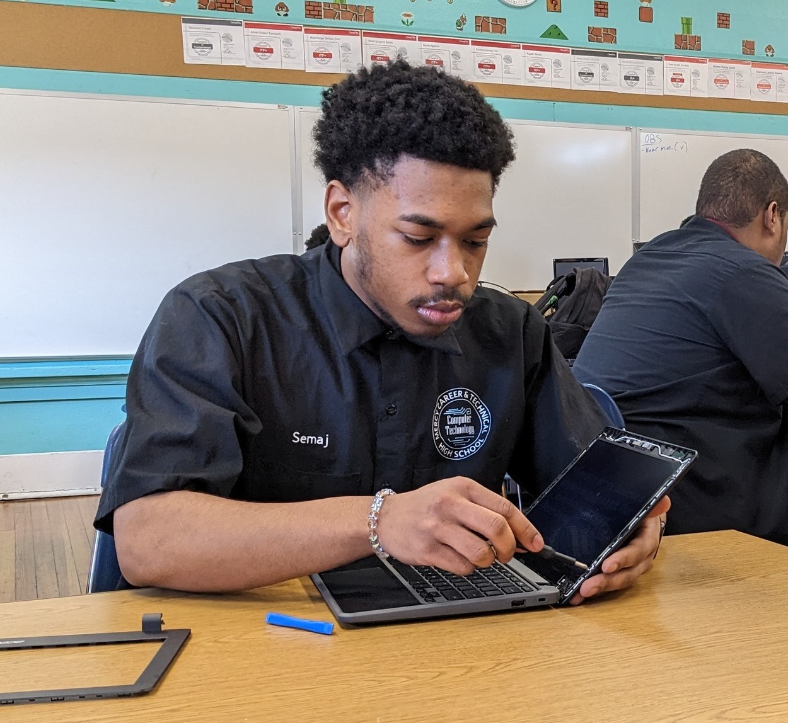

About Me
Hello! My name is Semaj Adolph, and I am an aspiring System Admin who created this website as a resource for learning about VPNs.
I believe that understanding VPNs is crucial in today's digital landscape, especially with growing concerns about online privacy and security. As someone passionate about technology and cybersecurity, I wanted to create a platform where people can easily access information about VPNs.
This website aims to provide comprehensive insights into VPN technology, its benefits, how to choose and set up a VPN, common issues, and solutions. Whether you're a beginner looking to learn the basics or an experienced user seeking troubleshooting tips, I hope you find this website helpful.
I hope that this webpage can provide the information needed and serve as a valuable resource for anyone who needs it. Thank you for visiting, and I hope you enjoy exploring and learning something new about VPNs.